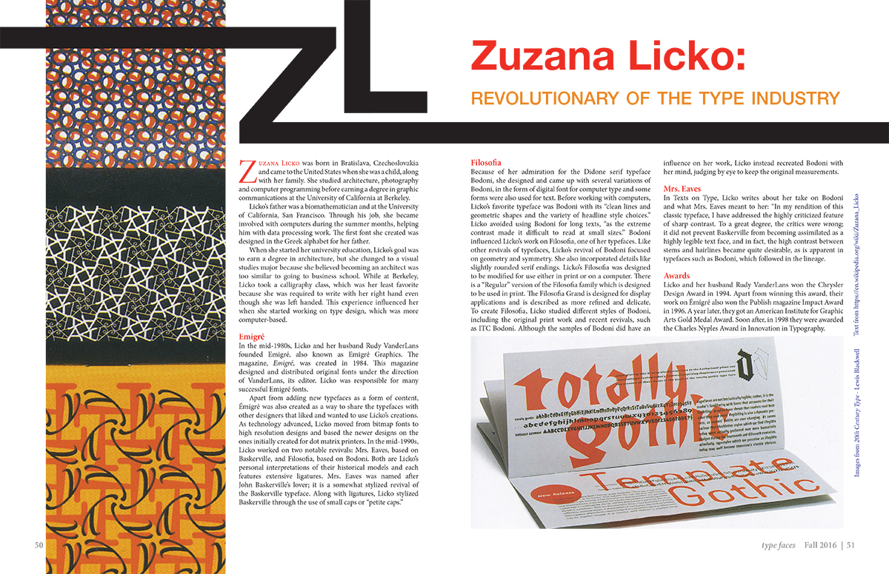

This article written by Patty Loew goes into detail about the immigration of the Oneida Nation to Wisconsin. I highlighted aspects of their culture by using the Wampum belt illustration at the top of the first spread and using their iconic purple color as an accent throughout the article. I chose the turquoise color to complement the purple and add a bright pop of color to draw the eye among the black & white images.
Date: Spring 2017
Client: Voyageur Magazine
Voyageur Contributors
Magazine Layout
This layout for Voyageur Magazine includes photos of article authors, a group photo of all Design and Editorial Interns, and a listing of all members who contributed to the publication.
Date: Spring 2017
Client: Voyageur Magazine
Juste un Baiser
Typeface Illustration
Problem: Design a display typeface consisting of the 26 alphabet characters and the
numbers 1-10 with a cap height of approximately 1.5 inches. The typeface must be hand-drawn and the title made in vector form in Adobe Illustrator. Consider the message that the typeface may communicate and the context it may be used in.
Solution: I designed a typeface that feels delicate, feminine, and playfully inviting with its thick to thin strokes and curled terminals. I feel that the typeface is quite versatile. It could work well for designs that are whimsical, feminine, or even some Halloween themes.
Date: Fall 2016
Class: Graphic Design Studio II
Initial Caps
Decorative Drop Caps
Problem: Create 6 initial cap letterform designs that creatively, clearly and immediately communicate the theme and could be placed in an online or print article featuring the following categories: a singer or musical group, a mystery novel, a book or series for middle school-aged children, a theatrical production, a fashion designer, and a television series. Five of the designs must use an initial cap from a typeface of each of the following categories: slab serif, old style, transitional, modern, sans serif. The final design should be a hand-drawn display type.
Solution:
D - (Twenty One Pilots) Rockwell works well for the alternative band I chose because it is a heavy, bold, slab serif typeface with geometric corners that lack a curved bracket.
G - (Gone Girl) Baskerville’s transitional style with sharp serifs and high contrast form complement the mystery/horror theme of the novel in my second solution.
A - (The Girl Who Drank the Moon) Jenson is an old style typeface and its handwritten qualities of thicker lines, curved brackets and serifs give my children's book solution a softer look.
I - (The Grand Paradise) Didot has a modern style with extreme contrast in the line weight between the heavy stems and thin cross bars and it helps to give a sleek, sexy look to my tropical theater solution.
T - (Christian Siriano) Gill Sans is a Humanist sans serif typeface with a bolder line weight and a form that is more balanced than Futura, so it worked well for the simple, elegant solution of the fashion designer.
S - (Stranger Things) I chose a form that resembles the claws of a monster featured in the show for my hand-drawn display type.
Date: Fall 2016
Class: Graphic Design Studio II
Space and Meaning
Typography
For this project, I created four 8x8 inch images using only words in the Futura typeface. The goal of the project was to create meaning that referred back to the chosen word by using spacial relationships. The restrictions for this project included avoiding skewing or mirroring the text and not using color.
Date: Fall 2016
Class: Graphic Design Studio II
Zuzana Licko
Magazine Spreads

Problem: Use an underlying grid to create magazine layouts featuring an article about a type designer. Creatively integrate type and image into the grid and make use of character and paragraph styles in InDesign.
Solution: I used the designer’s initials to creatively set up a title as well as using the letterforms to create grid lines that section off the title area from the body text. I also integrated images in different ways to either make a bold statement on the opposite page or to follow the grid and break up the body text.
Date: Fall 2016
Class: Graphic Design Studio II
24-Hour Bookstore
Book Jacket and Bookmark
This project focused on the use and relationships of text. I redesigned a book jacket and created a matching bookmark. I had to take measurements to make sure the jacket fit the book well. I used serif typefaces in the layouts because they are reminicent of the atmosphere of an old bookstore. The decision to use darker colors and an image of a partially eclipsed moon was inspired by the book's title.
Date: Fall 2016
Class: Graphic Design II
Big Foenix Group
Logo - Digital Illustration
The client wanted a very specific logo of a black and red, humanoid phoenix riding a motorcycle with a cigar and bowler hat for his live action role-playing (LARP) group. The group plays in an apocalyptic fantasy world where they fight for their lives against zombies. The logo will be used on badges and flags.
Date: March 2016
Client: Dystopia Rising Zombie LARP - Big Foenix Group
Regional At Best
Logo and Album Covers
For this project, we were required to redesign the logo and album cover for a band or musician. The band I chose, Twenty One Pilots, is an alternative band that mixes many different genres into their music; rap, rock, hip hop, pop, electronic, etc. Their music often has the themes of dealing with and overcoming depression. This particular album was released before they signed with their current record label and is no longer in circulation.
I imagined my design as if the band had re-recorded the album for their new label. It has a retro feel to give a nod to the colors and overall feel of their previous logo. The image is of a person laying on the bed with only one sock on and the other on the floor. This imagery is inspired by a line from the song "Slowtown" which talks about how adult life is hard and depression can make small tasks a struggle.
The new logo is inspired by an iconic line in their song "Guns for Hands" in which the singer talks about turning your guns to a fist, a metaphor for overcoming self-harm and depression.
Date: Spring 2016
Class: Graphic Design I
Business Card
Redesign of Company Business Cards
During my internship, the company went through a rebranding process. I got the opportunity to submit several different business card designs and this is the one that was selected for use by the entire company. I utilized the red wood background, wooden wave, and tag line of the new branding.
Date: August 2016
Internship: Lake of the Torches Casino
Associate Picnic
Informational Poster
The theme of the Associate Appreciation Picnic poster is reminicent of a retro postcard. I used a chunky font and bold summer colors to bring in the retro feel. Because the Casino is located on a lake and the picnic was hosted there, the image within the title text is of a local lake and the illustration behind has a lake scene as well.
Date: July 2016
Internship: Lake of the Torches Casino
4th of July
Informational Poster
This poster was created for the Lac du Flambeau Chamber of Commerce through my internship with Lake of the Torches Casino. Since the grand marshall for the parade was Brigadier General Joni Mathews and the theme was "Celebrating out Heroes," I chose to go with a bold, patriotic theme that subtly incorporated silhoutettes of soldiers. The client did not want to go over the top with military references and I think this solution keeps to the fun, family-friendly nature of the event while still acknowledging our country's heroes.